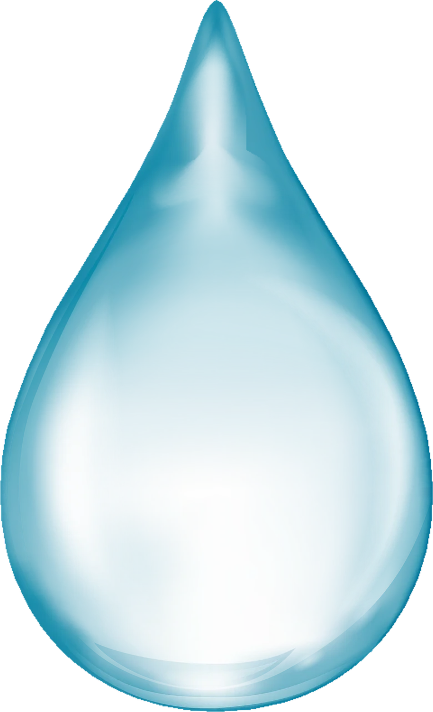
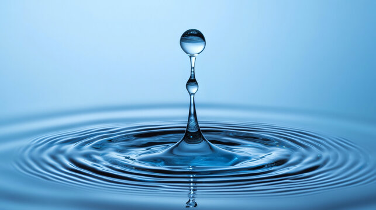
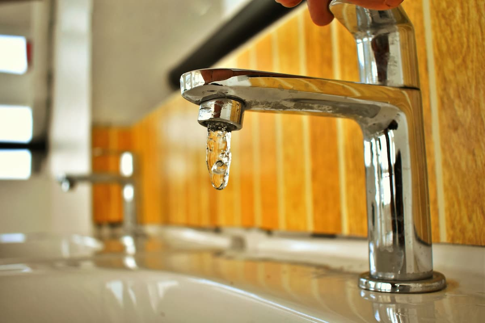
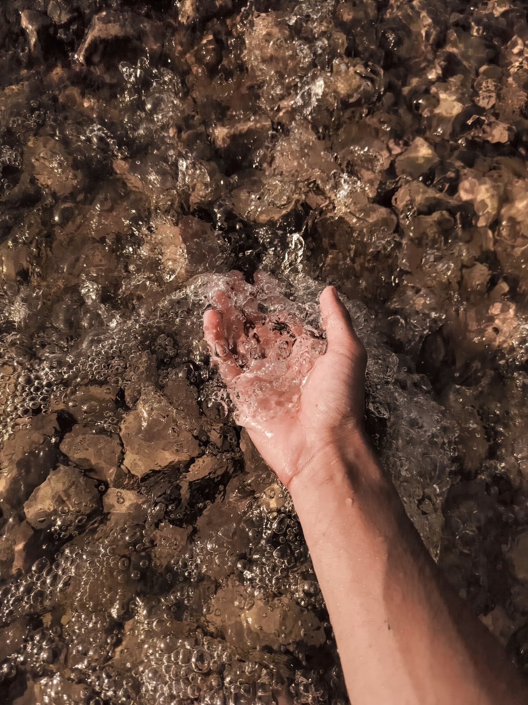
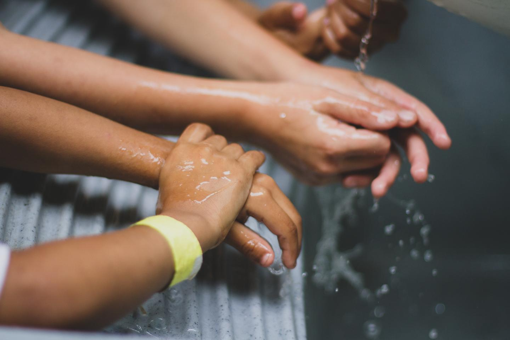
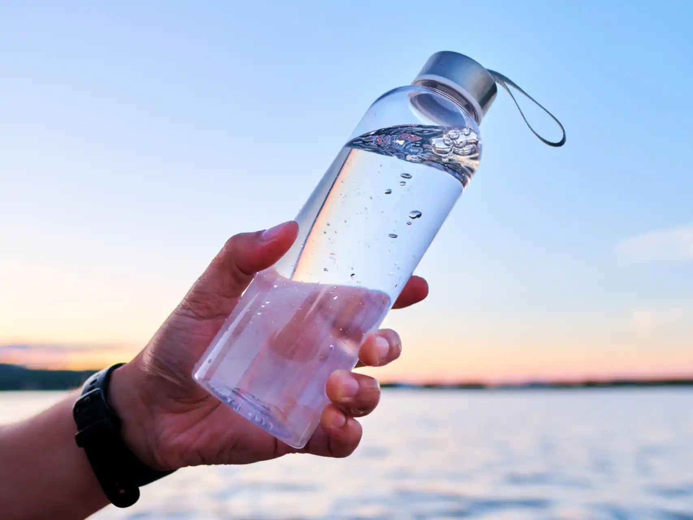
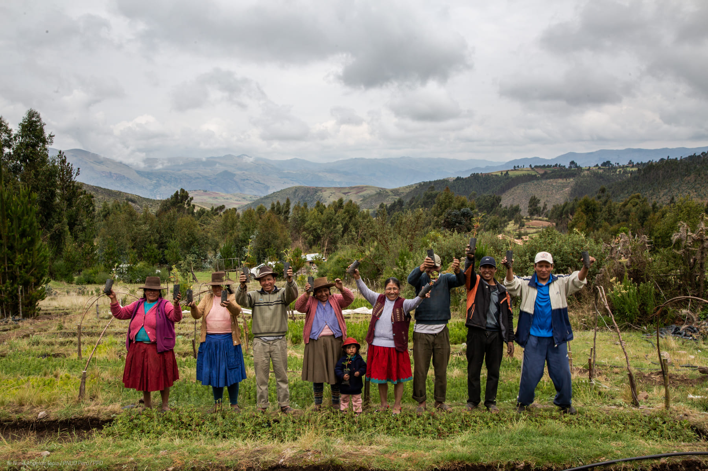

Vida
Cada gota cuenta
Usar el agua de forma responsable ayuda a reducir el estrés hídrico y proteger los ecosistemas.
Conocer más

Agua segura para una vida digna
El acceso al agua potable y al saneamiento permite prevenir enfermedades, mejorar la higiene diaria y garantizar condiciones básicas de salud y bienestar para todas las personas.
El agua
no es
infinita
Agua
¿Cómo aportar?
#1 eficiente

Ahorrar agua en casa
Pequeños hábitos diarios, como cerrar la canilla o reparar pérdidas, ayudan a reducir el desperdicio.
Ver más#2 eficiente

Cuidar ríos y humedales
Los ecosistemas relacionados con el agua son esenciales para la biodiversidad y la vida humana.
Ver más#3 eficiente

Mejorar la higiene diaria
Lavarse las manos con agua segura y jabón ayuda a prevenir enfermedades y proteger la salud de la comunidad.
Ver más
Consumo consciente
Elegir productos, alimentos y hábitos que requieran menos agua contribuye a reducir la presión sobre este recurso.
Ver más
Participar en comunidad
Exigir inversión, apoyar campañas y compartir información fortalece la gestión sostenible del agua.
Ver más